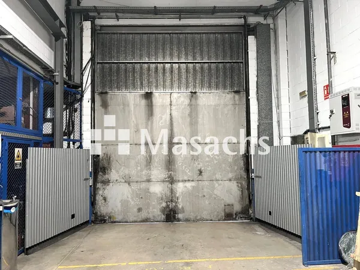
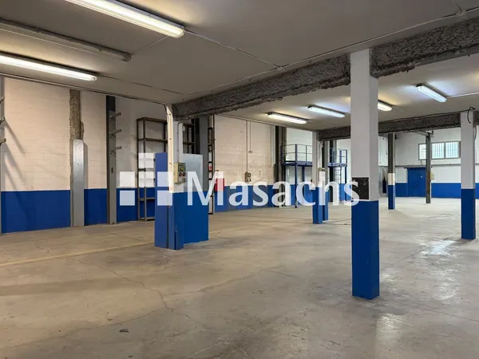
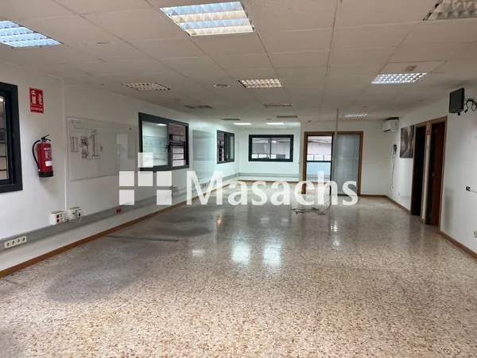

Plano · tocar un número de la lista lo marca acá
Letras: condiciones go/no-go · o: obra necesaria · números: lo que hay que medir o confirmar · c: lo que el chequeo de circulación marca hoy · trazos: el área o la franja de la cota · la línea azul: el largo libre a lo largo de la pista · ejes x/z: el origen de las cotas.
Condiciones go/no-go · si alguna sale mal, la nave se cae o hay que rehacer el layout
- Con margenDecide: ≥ 4,5 m libres bajo jácenas, cerchas, luminarias e instalaciones en la vertical de la plataforma: plataforma a 1,7 m + 2,4 m del rider + 0,4 m de instalaciones (PROGRAMA §1). Si da menos, se baja la plataforma (a lo medido − 2,8 m), nunca el run-out.Altura libre medida con láser sobre la plataforma (m):
7 notas del layout
fuente de la cota: fotos 1, 3 y 4: falso techo a ≈5,3 m junto al muro del pasillo, ≈5,7-6,0 m junto al muro del altillo y ≈6,0-6,4 m en el centro del testero · el anuncio publica 6,5 m libres, que se toman en cumbrera; se usa la lectura más conservadora
riesgo: Altura: el falso techo junto al muro del pasillo está a ≈5,3 m. Sobre las camas elásticas quedan ≈4,2 m: alcanza para saltos de ocio, pero conviene retirar el falso techo y medir la cota bajo la celosía.
riesgo: Los lucernarios de policarbonato están tapados por el falso techo y no se ve su número ni su posición: la luz natural real puede ser menor que la del render.
riesgo: rp-663 (24/11), lo que se movió para que se camine de verdad (walkabilityReport de 7 errores a 0; la altura libre debajo de la escalera existente la cierra el trastero bajo escalera del constructor, `understair`): el altillo queda sin programa, de forma provisional (risk 7: se deshace en un paso cuando se mida su escalera), y la oficina de staff baja a la planta baja, entre el pad y las gradas (3,0 × 2,7 m, 8,1 m², puerta al retorno); las gradas pasan a z 19,2-23,0 (11,4 m², 6 taburetes), abiertas al paso transversal: con la oficina al otro extremo no se llegaba a sus taburetes. El retorno pasa a 1,85 m centrado entre el murete del pad y la línea de HEB (x 3,3-5,15; 1,51 → 1,85 m libres): el extintor ext-retorno colgaba 0,17 m dentro del paso y va a la cara −z del HEB de z 11,275, fuera del retorno. El aseo adaptado pasa de 1,85 × 2,25 a 2,30 × 2,25 m, de x 11,9 hasta la pilastra del muro +x (x 14,2): el giro de Ø 1,50 entra (antes Ø 1,23) y delante de su puerta queda un vestíbulo de 1,9 m. El vestuario M pasa a 3,0 × 6,0 (18,0 m², el mínimo de PROGRAMA) y las taquillas a 3,95 m de fondo, sin el banco del medio: con él, el pasillo de las 13 columnas del fondo quedaba cerrado por los extremos (0,57-0,59 m entre el banco y los laterales de la U); se calza en el banco de botas del alquiler (4,0 m). Lo que se cedió mientras el altillo siga sin programa: el gym (28,6 m²: en planta baja no quedan 25 m² sin quitar algo de más prioridad, PROGRAMA: pista > pad > trampolines > gym), la sala de grupos (no está en PROGRAMA), el almacén del altillo (los recambios del alquiler van al taller, 23,3 m²), 4 m² de oficina (de 12 a 8,1) y 4 taburetes de las gradas. La franja de servicio entre la pista y el muro +x se cierra a la altura del frente de la plataforma (`cierre-franja-plataforma`, un tabique de 2,5 m): es un fondo de saco de ≈24 m, y desde su rincón del testero había 25,7 m hasta un punto con dos recorridos alternativos (DB-SI 3 tabla 3.1: 25; walk lo mide desde checker-2); con el rincón cerrado, 24,0 m. Sin obra nueva: el park de planta baja no necesita ninguna (la de la escalera, risk 7, es para recuperar el altillo).
supuesto: El visor dibuja las pilastras de los muros (frameSpacing) y los pilares de la cara del altillo. En structure.columns van los HEB de acero de la línea x = 5,3 m (2 en la sala alta y 5 bajo el borde −x del altillo, a toda altura) y los 3 pilares de la línea central bajo el forjado. Estos 3 llevan h 3,0 m y mueren en el intradós del forjado; el visor los pinta del gris de la estructura; en las fotos 5 y 6 son blancos con base azul, y en las de oficinas (8-14) no aparecen.
supuesto: La cara del altillo (−z) tiene en la nave 2 ventanas sueltas a ≈4,7-5,9 m en un paño ciego que sube hasta el falso techo plano (≈6,15 m). El visor solo dibuja una franja continua (glazing 1,4-2,5 m sobre el forjado de 3,3: 4,7-5,8 m) y el paño termina en la cubierta de las oficinas a 5,9 m (height 2,6, el alero). Lo mismo vale para el lado −x. El intradós del forjado se ve a ≈3,25-3,3 m (foto 1) y el visor lo pone a 3,0 (floorHeight 3,3 − canto 0,3): subir floorHeight a 3,6 cambiaría la escalera existente y las zonas del altillo, así que se deja para la visita.
supuesto: Fondo de la cara del altillo abierto (±1,5 m): z 23,25 (211 m² publicados, foto 4) frente a ≈24,7 (foto 1 con f ≈1.065 px). La primera fila de pilares va en el plano de la cara (paralaje fotos 1-2): no hay voladizo y los pilares automáticos de la cara siguen en 23,25. Si la cara estuviera en 24,7, el altillo mediría 9,35 × 21,0 = 196 m² y la pista ganaría 1,45 m (el murete del run-out acaba en z 23,2). En la visita: medir testero → cara del altillo, testero → HEB cercano, intradós del forjado y falso techo.
- Se decide en la visitaDecide: ≥ 22,9 m en línea recta a lo largo de la pista (plataforma 1,8 m, rampa, llano y el final más largo, run-out ≥ 8 m), del muro detrás de la plataforma al frente del altillo después del final. Si da menos, se acorta la rampa o el llano y se baja la plataforma, nunca el run-out.Distancia del muro al frente del altillo, a lo largo de la pista (m):
2 notas del layout
riesgo: El ancho (±0,5 m) y la posición de la cara del altillo (±1,5 m) salen de fotogrametría. La foto 6 sugiere la cara a ≈20 m: si estuviera ahí, habría que bajar la plataforma o acortar el llano. En la visita hay que medir el ancho, la distancia del testero a la cara y la de la línea de pilares al muro.
supuesto: Fondo de la cara del altillo abierto (±1,5 m): z 23,25 (211 m² publicados, foto 4) frente a ≈24,7 (foto 1 con f ≈1.065 px). La primera fila de pilares va en el plano de la cara (paralaje fotos 1-2): no hay voladizo y los pilares automáticos de la cara siguen en 23,25. Si la cara estuviera en 24,7, el altillo mediría 9,35 × 21,0 = 196 m² y la pista ganaría 1,45 m (el murete del run-out acaba en z 23,2). En la visita: medir testero → cara del altillo, testero → HEB cercano, intradós del forjado y falso techo.
- Se decide en la visitaDecide: Dos salidas o más a la calle o a un espacio exterior seguro, con recorridos de evacuación ≤ 50 m (CTE DB-SI 3 §3, tabla 3.1), y sus puertas con ≥ 0,80 m de paso y 2,10 m bajo el dintel. Cada salida nueva solo vale si el muro da a la calle o a un patio con salida y la propiedad deja abrirla (las obras, en «Obra necesaria»).
- acceso acristalado de 1,6 m en la arista 2 (hueco 0, x 10,8 · z 45,7): nueva (hay que abrirla) · obra o1
- salida de emergencia de 1,95 m en la arista 0 (hueco 2, x 2,05 · z 0)
Salidas confirmadas (cuáles, a dónde dan, ancho de paso):5 notas del layout
riesgo: La pista es mínima: 2 líneas × 3,3 m, 22,9 m y salida a 1,70 m, frente a la referencia de 4 líneas, 38 m y 4-5 m. La sala alta mide 14,5 × 23,25 m y la línea de pilares deja 8,8 m de ancho útil en el lado del altillo.
riesgo: La salida trasera da a un patio de ≈60 m² cerrado por vallas: hay que confirmar que conecta con la vía pública o que sirve como espacio exterior seguro. Para la sala alta es la salida cercana, ya que la entrada está a ≈50 m. La TIR sale a través del taller, que debe quedar despejado. La cola de la escalera queda junto a la puerta del testero: hay que reservar 1,2 m libres en x 1,3-2,5.
riesgo: El altillo (211 m² de oficinas) queda sin programa desde rp-663 (24/11), de forma provisional: es una decisión de negocio reversible, no un hallazgo cerrado, y se deshace en un paso (abajo). No tiene ascensor y el arranque de su única escalera es un supuesto de los datos (las fotos 12 y 14 solo muestran el rellano de arriba). Así dibujado, el primer peldaño queda a 0,08 m del muro de la fachada y solo se llega a él de costado, por 0,35 m entre el segundo peldaño y la fachada (del otro lado, 0,35 m hasta el muro +x): una persona de 0,60 m (walkabilityReport) no llega a su pie tal como se supuso, aunque el que camina del visor (0,5 m) sí la sube. Una escalera que se usa hoy no está hecha así: lo más probable es que el supuesto esté mal. Medir en la visita: lo primero, ¿la escalera de oficinas (x 12,9-14,15, z 40,4-45,6) arranca dentro de la nave o en una puerta de la calle? Después, su primer peldaño, lo libre delante (el rellano pide 1,20 m) y su ancho útil. Si arranca contra la fachada o en una puerta de la calle, obra necesaria para usar el altillo desde el park: rehacer el arranque con un rellano de 1,20 m al pie (el primer tramo girado hacia −x) o una escalera nueva de 1,20 m útiles (CTE DB-SUA 1 §4.2) desde la planta baja. Si arranca dentro de la nave con sitio delante, o con esa obra, se deshace en un paso (el layout de antes de rp-663, e4ba00f1^): la escalera con el arranque medido, hasta que walk llegue a su pie; vuelven al altillo (y 3,3) la oficina de staff (x 5,3, z 29,0, 4,0 × 3,0, puerta +x: de 8,1 a 12 m²), el almacén de recambios (almacen-altillo, x 5,3, z 40,5, 3,7 × 3,5, puerta +x) y, con ≥ 1,00 m de paso en la escalera (es de público), el gym (x 5,3, z 23,4, 5,5 × 5,2, de cara a la pista) con su vista gym; en planta baja sale la oficina de x 0,3, z 16,45 y las gradas vuelven a z 16,4-23,0 con 10 taburetes. La sala de grupos, de público como el lounge, pide además itinerario accesible: solo vuelve con una plataforma elevadora (CTE DB-SUA 9; Decret 209/2023). Lo que walk mide entonces (prueba de rp-663 con el pie 1,2 m más adentro, z 39,2-44,4): llega a las tres, pero la evacuación desde la cara del altillo (5,5, 23,7) tiene 29,9 m hasta dos recorridos alternativos (CTE DB-SI 3 tabla 3.1: 25, con una sola escalera en la punta de la fachada) y bajo los pórticos (z 28,6-45,5) quedan 2,15-2,17 m libres sobre el forjado (a medir): hay que cerrar con un tabique la punta de la cara (o sumar otra bajada) y comprobar la sobrecarga del forjado con el gym. Es decisión de negocio: el park de planta baja no depende de esa obra. Mientras tanto, los tabiques `cierre-altillo*` (open-floors, 25/11, fit-out) lo clausuran en la llegada de la escalera (donde la nave tiene el rellano con puertas de vidrio, foto 14), y walk mide la escalera con los mínimos de uso restringido; se quitan en el mismo paso que vuelve el programa.
supuesto: El rail de la línea 2 está a 1,5 m del pie de la rampa y mide 5,5 m a 0,45 m. Así el backside lipslide del visor tiene entrada desde la rampa, deslizamiento completo y salida dentro del run-out (ver la verificación del truco). El cajón de iniciación de la línea 1 está en la misma posición.
supuesto: Planta baja bajo el altillo: pasillo central de 1,22 m al este de los pilares centrales. A un lado quedan el lounge, el vestuario F, el alquiler con el banco y la recepción; al otro, el café, el aseo adaptado (hasta la pilastra del muro +x, con un vestíbulo de 1,9 m delante de su puerta), el botiquín, el vestuario M, las taquillas y los aseos existentes. El pasillo del lado −x (crujía alta junto al altillo) aloja las camas elásticas y el taller con la TIR. Entre el final de la pista y el altillo, un paso transversal de 1,3-1,6 m (z 23,25-24,85) une el pasillo central con el retorno, las gradas y las camas elásticas; el lounge queda detrás, con su barra de cara a la pista. Del lado +x, el café empieza en z 24,15 y deja 1,2 m libres tras el final de la pista: es la salida +x del run-out y el acceso a la franja de servicio del muro +x (BIE y extintor). La oficina de staff va entre el pad y las gradas, con la puerta al retorno (rp-663, 24/11).
- Se decide en la visitaDecide: Huella ≥ 0,28 m, contrahuella de 0,13 a 0,185 m y 0,54 ≤ 2C + H ≤ 0,70 (CTE DB-SUA 1 §4.2.1); ancho ≥ 1,20 m (PROGRAMA; el CTE pide 1,00-1,10); tramos de ≤ 2,25 m sin descanso. Una escalera existente que no cumple no sirve para el público (gym o altillo): hay que rehacerla o poner otra.
- de la plataforma (escalera-plataforma): huella 0,28 m, contrahuella 0,17 m, ancho 1,36 m, tramo de 1,7 m sin descanso, sube 1,7 m
- existente (escalera-existente): huella 0,11 m, contrahuella 0,17 m, ancho 0,75 m, tramo de 3,3 m sin descanso, sube 3,3 m · hoy no se llega a su arranque
Huella × contrahuella × ancho de la escalera existente (m):8 notas del layout
riesgo: La salida trasera da a un patio de ≈60 m² cerrado por vallas: hay que confirmar que conecta con la vía pública o que sirve como espacio exterior seguro. Para la sala alta es la salida cercana, ya que la entrada está a ≈50 m. La TIR sale a través del taller, que debe quedar despejado. La cola de la escalera queda junto a la puerta del testero: hay que reservar 1,2 m libres en x 1,3-2,5.
riesgo: El altillo (211 m² de oficinas) queda sin programa desde rp-663 (24/11), de forma provisional: es una decisión de negocio reversible, no un hallazgo cerrado, y se deshace en un paso (abajo). No tiene ascensor y el arranque de su única escalera es un supuesto de los datos (las fotos 12 y 14 solo muestran el rellano de arriba). Así dibujado, el primer peldaño queda a 0,08 m del muro de la fachada y solo se llega a él de costado, por 0,35 m entre el segundo peldaño y la fachada (del otro lado, 0,35 m hasta el muro +x): una persona de 0,60 m (walkabilityReport) no llega a su pie tal como se supuso, aunque el que camina del visor (0,5 m) sí la sube. Una escalera que se usa hoy no está hecha así: lo más probable es que el supuesto esté mal. Medir en la visita: lo primero, ¿la escalera de oficinas (x 12,9-14,15, z 40,4-45,6) arranca dentro de la nave o en una puerta de la calle? Después, su primer peldaño, lo libre delante (el rellano pide 1,20 m) y su ancho útil. Si arranca contra la fachada o en una puerta de la calle, obra necesaria para usar el altillo desde el park: rehacer el arranque con un rellano de 1,20 m al pie (el primer tramo girado hacia −x) o una escalera nueva de 1,20 m útiles (CTE DB-SUA 1 §4.2) desde la planta baja. Si arranca dentro de la nave con sitio delante, o con esa obra, se deshace en un paso (el layout de antes de rp-663, e4ba00f1^): la escalera con el arranque medido, hasta que walk llegue a su pie; vuelven al altillo (y 3,3) la oficina de staff (x 5,3, z 29,0, 4,0 × 3,0, puerta +x: de 8,1 a 12 m²), el almacén de recambios (almacen-altillo, x 5,3, z 40,5, 3,7 × 3,5, puerta +x) y, con ≥ 1,00 m de paso en la escalera (es de público), el gym (x 5,3, z 23,4, 5,5 × 5,2, de cara a la pista) con su vista gym; en planta baja sale la oficina de x 0,3, z 16,45 y las gradas vuelven a z 16,4-23,0 con 10 taburetes. La sala de grupos, de público como el lounge, pide además itinerario accesible: solo vuelve con una plataforma elevadora (CTE DB-SUA 9; Decret 209/2023). Lo que walk mide entonces (prueba de rp-663 con el pie 1,2 m más adentro, z 39,2-44,4): llega a las tres, pero la evacuación desde la cara del altillo (5,5, 23,7) tiene 29,9 m hasta dos recorridos alternativos (CTE DB-SI 3 tabla 3.1: 25, con una sola escalera en la punta de la fachada) y bajo los pórticos (z 28,6-45,5) quedan 2,15-2,17 m libres sobre el forjado (a medir): hay que cerrar con un tabique la punta de la cara (o sumar otra bajada) y comprobar la sobrecarga del forjado con el gym. Es decisión de negocio: el park de planta baja no depende de esa obra. Mientras tanto, los tabiques `cierre-altillo*` (open-floors, 25/11, fit-out) lo clausuran en la llegada de la escalera (donde la nave tiene el rellano con puertas de vidrio, foto 14), y walk mide la escalera con los mínimos de uso restringido; se quitan en el mismo paso que vuelve el programa.
riesgo: rp-663 (24/11), lo que se movió para que se camine de verdad (walkabilityReport de 7 errores a 0; la altura libre debajo de la escalera existente la cierra el trastero bajo escalera del constructor, `understair`): el altillo queda sin programa, de forma provisional (risk 7: se deshace en un paso cuando se mida su escalera), y la oficina de staff baja a la planta baja, entre el pad y las gradas (3,0 × 2,7 m, 8,1 m², puerta al retorno); las gradas pasan a z 19,2-23,0 (11,4 m², 6 taburetes), abiertas al paso transversal: con la oficina al otro extremo no se llegaba a sus taburetes. El retorno pasa a 1,85 m centrado entre el murete del pad y la línea de HEB (x 3,3-5,15; 1,51 → 1,85 m libres): el extintor ext-retorno colgaba 0,17 m dentro del paso y va a la cara −z del HEB de z 11,275, fuera del retorno. El aseo adaptado pasa de 1,85 × 2,25 a 2,30 × 2,25 m, de x 11,9 hasta la pilastra del muro +x (x 14,2): el giro de Ø 1,50 entra (antes Ø 1,23) y delante de su puerta queda un vestíbulo de 1,9 m. El vestuario M pasa a 3,0 × 6,0 (18,0 m², el mínimo de PROGRAMA) y las taquillas a 3,95 m de fondo, sin el banco del medio: con él, el pasillo de las 13 columnas del fondo quedaba cerrado por los extremos (0,57-0,59 m entre el banco y los laterales de la U); se calza en el banco de botas del alquiler (4,0 m). Lo que se cedió mientras el altillo siga sin programa: el gym (28,6 m²: en planta baja no quedan 25 m² sin quitar algo de más prioridad, PROGRAMA: pista > pad > trampolines > gym), la sala de grupos (no está en PROGRAMA), el almacén del altillo (los recambios del alquiler van al taller, 23,3 m²), 4 m² de oficina (de 12 a 8,1) y 4 taburetes de las gradas. La franja de servicio entre la pista y el muro +x se cierra a la altura del frente de la plataforma (`cierre-franja-plataforma`, un tabique de 2,5 m): es un fondo de saco de ≈24 m, y desde su rincón del testero había 25,7 m hasta un punto con dos recorridos alternativos (DB-SI 3 tabla 3.1: 25; walk lo mide desde checker-2); con el rincón cerrado, 24,0 m. Sin obra nueva: el park de planta baja no necesita ninguna (la de la escalera, risk 7, es para recuperar el altillo).
supuesto: No aparecen en las fotos, así que se ubican por suposición: la escalera de oficinas en PB (junto al muro +x, con el arranque en la fachada), los aseos y el vestuario existentes (junto a ella) y la entrada peatonal, que es una propuesta en la fachada al final del pasillo central.
supuesto: El retorno va por el lado del pasillo de la línea de pilares. Los riders salen del run-out entre los pilares de z 17,1 y la cara. La escalera cruza la línea de pilares donde no hay pilar (z < 11) y llega de frente a la plataforma.
supuesto: Las oficinas existentes (forjado a 3,3 m) quedan sin programa desde rp-663 (24/11), de forma provisional: es una decisión de negocio reversible, no un hallazgo cerrado. El arranque de su escalera se supuso contra la fachada y, así, una persona de 0,60 m (walkabilityReport) no llega a su pie; el que camina del visor (0,5 m) sí la sube. Antes iban ahí el mini gym, la sala de grupos, la oficina de staff y un almacén de recambios; cómo volver a ponerlos, en notes.risks («el altillo»).
supuesto: plantilla Stoke Mountain adaptada: plataforma 1.7 m × 1.8 m; drop-in de 1.15 m en 3.2 m; 1 terraza(s) de 6.7 m que caen 1° unidas por drops de 0.39 m en 2.6 m; sin carril de transición (nave estrecha); 2 módulos a escala real por terraza (T1 cajones cortos, T2 cajón largo / rail / roller, down rail en el último drop), solo donde se llega con velocidad (µ 0,09); misma huella, mismos finales (run-out ≥ 8 m / quarter) y escalera; los módulos anteriores quedan en slope.legacyModules.
supuesto: La cara del altillo (−z) tiene en la nave 2 ventanas sueltas a ≈4,7-5,9 m en un paño ciego que sube hasta el falso techo plano (≈6,15 m). El visor solo dibuja una franja continua (glazing 1,4-2,5 m sobre el forjado de 3,3: 4,7-5,8 m) y el paño termina en la cubierta de las oficinas a 5,9 m (height 2,6, el alero). Lo mismo vale para el lado −x. El intradós del forjado se ve a ≈3,25-3,3 m (foto 1) y el visor lo pone a 3,0 (floorHeight 3,3 − canto 0,3): subir floorHeight a 3,6 cambiaría la escalera existente y las zonas del altillo, así que se deja para la visita.
- Se decide en la visitaDecide: Ningún pilar dentro de la pista; los de la franja de 0,2 m del murete y la red, forrados (el murete se corta en cada uno); el pasillo de retorno, ≥ 1,80 m libres con los pilares.Posición y sección de los pilares junto a la pista (m):
5 notas del layout
riesgo: La pista es mínima: 2 líneas × 3,3 m, 22,9 m y salida a 1,70 m, frente a la referencia de 4 líneas, 38 m y 4-5 m. La sala alta mide 14,5 × 23,25 m y la línea de pilares deja 8,8 m de ancho útil en el lado del altillo.
riesgo: El ancho (±0,5 m) y la posición de la cara del altillo (±1,5 m) salen de fotogrametría. La foto 6 sugiere la cara a ≈20 m: si estuviera ahí, habría que bajar la plataforma o acortar el llano. En la visita hay que medir el ancho, la distancia del testero a la cara y la de la línea de pilares al muro.
riesgo: Las camas elásticas tienen 0,9 m de colchoneta lateral, no 1,5 m, porque el pasillo mide 4,85 m. El muro y los pilares van acolchados y hay red en el lado abierto. Con 1,5 m a cada lado haría falta una crujía de 6,05 m, que no existe fuera de la pista.
riesgo: La viga longitudinal a ≈4,2 m sobre la línea de pilares, entre la pista y el retorno, hay que protegerla y señalizarla.
riesgo: rp-663 (24/11), lo que se movió para que se camine de verdad (walkabilityReport de 7 errores a 0; la altura libre debajo de la escalera existente la cierra el trastero bajo escalera del constructor, `understair`): el altillo queda sin programa, de forma provisional (risk 7: se deshace en un paso cuando se mida su escalera), y la oficina de staff baja a la planta baja, entre el pad y las gradas (3,0 × 2,7 m, 8,1 m², puerta al retorno); las gradas pasan a z 19,2-23,0 (11,4 m², 6 taburetes), abiertas al paso transversal: con la oficina al otro extremo no se llegaba a sus taburetes. El retorno pasa a 1,85 m centrado entre el murete del pad y la línea de HEB (x 3,3-5,15; 1,51 → 1,85 m libres): el extintor ext-retorno colgaba 0,17 m dentro del paso y va a la cara −z del HEB de z 11,275, fuera del retorno. El aseo adaptado pasa de 1,85 × 2,25 a 2,30 × 2,25 m, de x 11,9 hasta la pilastra del muro +x (x 14,2): el giro de Ø 1,50 entra (antes Ø 1,23) y delante de su puerta queda un vestíbulo de 1,9 m. El vestuario M pasa a 3,0 × 6,0 (18,0 m², el mínimo de PROGRAMA) y las taquillas a 3,95 m de fondo, sin el banco del medio: con él, el pasillo de las 13 columnas del fondo quedaba cerrado por los extremos (0,57-0,59 m entre el banco y los laterales de la U); se calza en el banco de botas del alquiler (4,0 m). Lo que se cedió mientras el altillo siga sin programa: el gym (28,6 m²: en planta baja no quedan 25 m² sin quitar algo de más prioridad, PROGRAMA: pista > pad > trampolines > gym), la sala de grupos (no está en PROGRAMA), el almacén del altillo (los recambios del alquiler van al taller, 23,3 m²), 4 m² de oficina (de 12 a 8,1) y 4 taburetes de las gradas. La franja de servicio entre la pista y el muro +x se cierra a la altura del frente de la plataforma (`cierre-franja-plataforma`, un tabique de 2,5 m): es un fondo de saco de ≈24 m, y desde su rincón del testero había 25,7 m hasta un punto con dos recorridos alternativos (DB-SI 3 tabla 3.1: 25; walk lo mide desde checker-2); con el rincón cerrado, 24,0 m. Sin obra nueva: el park de planta baja no necesita ninguna (la de la escalera, risk 7, es para recuperar el altillo).
- Se decide en la visitaDecide: El ancho entre medianeras (cara de los pilares) que da para las líneas de la pista, su franja y el retorno de ≥ 1,80 m.Ancho interior entre caras de pilares (m):
1 nota del layout
riesgo: El ancho (±0,5 m) y la posición de la cara del altillo (±1,5 m) salen de fotogrametría. La foto 6 sugiere la cara a ≈20 m: si estuviera ahí, habría que bajar la plataforma o acortar el llano. En la visita hay que medir el ancho, la distancia del testero a la cara y la de la línea de pilares al muro.
- Se decide en la visitaDecide: Lo que no se ve en las fotos y puede cambiar la obra: puentes grúa, forjados que tienen que aguantar el gym, muros que habría que tirar, cubiertas de fibrocemento.Qué se vio (y qué papel hay que pedir):
1 nota del layout
riesgo: El altillo (211 m² de oficinas) queda sin programa desde rp-663 (24/11), de forma provisional: es una decisión de negocio reversible, no un hallazgo cerrado, y se deshace en un paso (abajo). No tiene ascensor y el arranque de su única escalera es un supuesto de los datos (las fotos 12 y 14 solo muestran el rellano de arriba). Así dibujado, el primer peldaño queda a 0,08 m del muro de la fachada y solo se llega a él de costado, por 0,35 m entre el segundo peldaño y la fachada (del otro lado, 0,35 m hasta el muro +x): una persona de 0,60 m (walkabilityReport) no llega a su pie tal como se supuso, aunque el que camina del visor (0,5 m) sí la sube. Una escalera que se usa hoy no está hecha así: lo más probable es que el supuesto esté mal. Medir en la visita: lo primero, ¿la escalera de oficinas (x 12,9-14,15, z 40,4-45,6) arranca dentro de la nave o en una puerta de la calle? Después, su primer peldaño, lo libre delante (el rellano pide 1,20 m) y su ancho útil. Si arranca contra la fachada o en una puerta de la calle, obra necesaria para usar el altillo desde el park: rehacer el arranque con un rellano de 1,20 m al pie (el primer tramo girado hacia −x) o una escalera nueva de 1,20 m útiles (CTE DB-SUA 1 §4.2) desde la planta baja. Si arranca dentro de la nave con sitio delante, o con esa obra, se deshace en un paso (el layout de antes de rp-663, e4ba00f1^): la escalera con el arranque medido, hasta que walk llegue a su pie; vuelven al altillo (y 3,3) la oficina de staff (x 5,3, z 29,0, 4,0 × 3,0, puerta +x: de 8,1 a 12 m²), el almacén de recambios (almacen-altillo, x 5,3, z 40,5, 3,7 × 3,5, puerta +x) y, con ≥ 1,00 m de paso en la escalera (es de público), el gym (x 5,3, z 23,4, 5,5 × 5,2, de cara a la pista) con su vista gym; en planta baja sale la oficina de x 0,3, z 16,45 y las gradas vuelven a z 16,4-23,0 con 10 taburetes. La sala de grupos, de público como el lounge, pide además itinerario accesible: solo vuelve con una plataforma elevadora (CTE DB-SUA 9; Decret 209/2023). Lo que walk mide entonces (prueba de rp-663 con el pie 1,2 m más adentro, z 39,2-44,4): llega a las tres, pero la evacuación desde la cara del altillo (5,5, 23,7) tiene 29,9 m hasta dos recorridos alternativos (CTE DB-SI 3 tabla 3.1: 25, con una sola escalera en la punta de la fachada) y bajo los pórticos (z 28,6-45,5) quedan 2,15-2,17 m libres sobre el forjado (a medir): hay que cerrar con un tabique la punta de la cara (o sumar otra bajada) y comprobar la sobrecarga del forjado con el gym. Es decisión de negocio: el park de planta baja no depende de esa obra. Mientras tanto, los tabiques `cierre-altillo*` (open-floors, 25/11, fit-out) lo clausuran en la llegada de la escalera (donde la nave tiene el rellano con puertas de vidrio, foto 14), y walk mide la escalera con los mínimos de uso restringido; se quitan en el mismo paso que vuelve el programa.
Obra necesaria · lo que la nave no tiene hoy y la propuesta necesita: decisiones del usuario, a ver en la visita si se puede
- hueco nuevoObra: En la fachada bajo el altillo, al final del pasillo central; el acceso peatonal actual no aparece en las fotosEn la visita: Que el paño de muro dé a la calle o a un espacio exterior seguro (si da a una nave vecina, solo vale como salida de planta, con un vestíbulo de independencia o un pasillo protegido: CTE DB-SI Anejo A), que en el hueco no haya pilares, bajantes ni instalaciones, y que la propiedad deje abrirlo. Como entrada de público, a cota de la calle y sin escalón.
- Es la entrada de público: el chequeo de circulación mide desde ella.
- Es una de las 2 salidas que cuenta el chequeo de circulación: sin ella quedaría una sola.
De dónde sale
fuente: propuesta: en la fachada bajo el altillo, al final del pasillo central; el acceso peatonal actual no aparece en las fotos
Visto: - solo en las notasEn la visita: Medir en la visita: lo primero, ¿la escalera de oficinas (x 12,9-14,15, z 40,4-45,6) arranca dentro de la nave o en una puerta de la calle? Después, su primer peldaño, lo libre delante (el rellano pide 1,20 m) y su ancho útil.
De dónde sale
riesgo 8: El altillo (211 m² de oficinas) queda sin programa desde rp-663 (24/11), de forma provisional: es una decisión de negocio reversible, no un hallazgo cerrado, y se deshace en un paso (abajo). No tiene ascensor y el arranque de su única escalera es un supuesto de los datos (las fotos 12 y 14 solo muestran el rellano de arriba). Así dibujado, el primer peldaño queda a 0,08 m del muro de la fachada y solo se llega a él de costado, por 0,35 m entre el segundo peldaño y la fachada (del otro lado, 0,35 m hasta el muro +x): una persona de 0,60 m (walkabilityReport) no llega a su pie tal como se supuso, aunque el que camina del visor (0,5 m) sí la sube. Una escalera que se usa hoy no está hecha así: lo más probable es que el supuesto esté mal. Medir en la visita: lo primero, ¿la escalera de oficinas (x 12,9-14,15, z 40,4-45,6) arranca dentro de la nave o en una puerta de la calle? Después, su primer peldaño, lo libre delante (el rellano pide 1,20 m) y su ancho útil. Si arranca contra la fachada o en una puerta de la calle, obra necesaria para usar el altillo desde el park: rehacer el arranque con un rellano de 1,20 m al pie (el primer tramo girado hacia −x) o una escalera nueva de 1,20 m útiles (CTE DB-SUA 1 §4.2) desde la planta baja. Si arranca dentro de la nave con sitio delante, o con esa obra, se deshace en un paso (el layout de antes de rp-663, e4ba00f1^): la escalera con el arranque medido, hasta que walk llegue a su pie; vuelven al altillo (y 3,3) la oficina de staff (x 5,3, z 29,0, 4,0 × 3,0, puerta +x: de 8,1 a 12 m²), el almacén de recambios (almacen-altillo, x 5,3, z 40,5, 3,7 × 3,5, puerta +x) y, con ≥ 1,00 m de paso en la escalera (es de público), el gym (x 5,3, z 23,4, 5,5 × 5,2, de cara a la pista) con su vista gym; en planta baja sale la oficina de x 0,3, z 16,45 y las gradas vuelven a z 16,4-23,0 con 10 taburetes. La sala de grupos, de público como el lounge, pide además itinerario accesible: solo vuelve con una plataforma elevadora (CTE DB-SUA 9; Decret 209/2023). Lo que walk mide entonces (prueba de rp-663 con el pie 1,2 m más adentro, z 39,2-44,4): llega a las tres, pero la evacuación desde la cara del altillo (5,5, 23,7) tiene 29,9 m hasta dos recorridos alternativos (CTE DB-SI 3 tabla 3.1: 25, con una sola escalera en la punta de la fachada) y bajo los pórticos (z 28,6-45,5) quedan 2,15-2,17 m libres sobre el forjado (a medir): hay que cerrar con un tabique la punta de la cara (o sumar otra bajada) y comprobar la sobrecarga del forjado con el gym. Es decisión de negocio: el park de planta baja no depende de esa obra. Mientras tanto, los tabiques `cierre-altillo*` (open-floors, 25/11, fit-out) lo clausuran en la llegada de la escalera (donde la nave tiene el rellano con puertas de vidrio, foto 14), y walk mide la escalera con los mínimos de uso restringido; se quitan en el mismo paso que vuelve el programa.
Visto:
Medir y confirmar en la visita · 11, de las notas del layout
-
Detalle
Fondo de la cara del altillo abierto (±1,5 m): z 23,25 (211 m² publicados, foto 4) frente a ≈24,7 (foto 1 con f ≈1.065 px). La primera fila de pilares va en el plano de la cara (paralaje fotos 1-2): no hay voladizo y los pilares automáticos de la cara siguen en 23,25. Si la cara estuviera en 24,7, el altillo mediría 9,35 × 21,0 = 196 m² y la pista ganaría 1,45 m (el murete del run-out acaba en z 23,2).
Medido: -
Detalle
medir en la visita:
Desde fuera (foto 1, sin focal) el borde inferior de la cara está a ≈3,27 m y las ventanas a 4,69-5,91 m; desde dentro (fotos 8, 9 y 11) las ventanas tienen el alféizar a ≈0,6-0,9 m del suelo y el falso techo a ≈2,3-2,5 m. Con el suelo a 3,3 (layout) el alféizar de la cara quedaría a 1,4 m del suelo; con el suelo a ≈3,6 y 2,3 m de techo cuadra todo (forjado 3,27-3,6, ventanas a 1,1-2,3 m, techo a 5,9). No se cambia: subir floorHeight cambia la escalera existente, las 4 zonas del altillo y la vista gym.
Medido: -
Detalle
medir en la visita:
Medido: -
Detalle
medir en la visita:
El visor las pone a 5,5 m (altura libre conservadora) y cruzan la caja de oficinas, que llega a 5,9; en las fotos 10-13 las oficinas tienen falso techo y no se ve estructura.
Medido: -
Detalle
medir en la visita:
En el visor (x 5,13-5,43, muro en 5,15-5,25) asoman 0,18 m dentro de las oficinas; en las fotos 9, 12 y 13 ese muro es liso por dentro, así que los HEB quedan fuera o embebidos en un muro más grueso. La foto 7 pone el de la fachada ≈0,8 m al +x de la TIR (x ≈5,8 con la TIR en 1,0-5,0; ver «match3: HEB de fachada»).
Medido: -
Detalle
medir en la visita:
Medido: -
Detalle
El ancho (±0,5 m) y la posición de la cara del altillo (±1,5 m) salen de fotogrametría. La foto 6 sugiere la cara a ≈20 m: si estuviera ahí, habría que bajar la plataforma o acortar el llano.
Medido: -
Detalle
Altura: el falso techo junto al muro del pasillo está a ≈5,3 m.
Medido: -
Detalle
Para la sala alta es la salida cercana, ya que la entrada está a ≈50 m. La TIR sale a través del taller, que debe quedar despejado. La cola de la escalera queda junto a la puerta del testero: hay que reservar 1,2 m libres en x 1,3-2,5.
Medido: -
Detalle
El altillo (211 m² de oficinas) queda sin programa desde rp-663 (24/11), de forma provisional: es una decisión de negocio reversible, no un hallazgo cerrado, y se deshace en un paso (abajo). No tiene ascensor y el arranque de su única escalera es un supuesto de los datos (las fotos 12 y 14 solo muestran el rellano de arriba). Así dibujado, el primer peldaño queda a 0,08 m del muro de la fachada y solo se llega a él de costado, por 0,35 m entre el segundo peldaño y la fachada (del otro lado, 0,35 m hasta el muro +x): una persona de 0,60 m (walkabilityReport) no llega a su pie tal como se supuso, aunque el que camina del visor (0,5 m) sí la sube. Una escalera que se usa hoy no está hecha así: lo más probable es que el supuesto esté mal. Medir en la visita:
Si arranca contra la fachada o en una puerta de la calle, obra necesaria para usar el altillo desde el park: rehacer el arranque con un rellano de 1,20 m al pie (el primer tramo girado hacia −x) o una escalera nueva de 1,20 m útiles (CTE DB-SUA 1 §4.2) desde la planta baja. Si arranca dentro de la nave con sitio delante, o con esa obra, se deshace en un paso (el layout de antes de rp-663, e4ba00f1^): la escalera con el arranque medido, hasta que walk llegue a su pie; vuelven al altillo (y 3,3) la oficina de staff (x 5,3, z 29,0, 4,0 × 3,0, puerta +x: de 8,1 a 12 m²), el almacén de recambios (almacen-altillo, x 5,3, z 40,5, 3,7 × 3,5, puerta +x) y, con ≥ 1,00 m de paso en la escalera (es de público), el gym (x 5,3, z 23,4, 5,5 × 5,2, de cara a la pista) con su vista gym; en planta baja sale la oficina de x 0,3, z 16,45 y las gradas vuelven a z 16,4-23,0 con 10 taburetes. La sala de grupos, de público como el lounge, pide además itinerario accesible: solo vuelve con una plataforma elevadora (CTE DB-SUA 9; Decret 209/2023). Lo que walk mide entonces (prueba de rp-663 con el pie 1,2 m más adentro, z 39,2-44,4): llega a las tres, pero la evacuación desde la cara del altillo (5,5, 23,7) tiene 29,9 m hasta dos recorridos alternativos (CTE DB-SI 3 tabla 3.1: 25, con una sola escalera en la punta de la fachada) y bajo los pórticos (z 28,6-45,5) quedan 2,15-2,17 m libres sobre el forjado (a medir): hay que cerrar con un tabique la punta de la cara (o sumar otra bajada) y comprobar la sobrecarga del forjado con el gym. Es decisión de negocio: el park de planta baja no depende de esa obra. Mientras tanto, los tabiques `cierre-altillo*` (open-floors, 25/11, fit-out) lo clausuran en la llegada de la escalera (donde la nave tiene el rellano con puertas de vidrio, foto 14), y walk mide la escalera con los mínimos de uso restringido; se quitan en el mismo paso que vuelve el programa.
Medido: -
Medido:
Circulación · lo que el chequeo marca hoy (CTE DB-SI 3, DB-SUA): ver en la visita si el paso real es así
- avisoescalera existente escalera-existente: contrahuellas de 0,174 a 0,174 m y huellas de 0,111 a 0,274 m (uso restringido: C ≤ 0,200, H ≥ 0,220)CTE DB-SUA 1 §4.1, §4.2.1 y §4.2.2 · contrahuellas de 0,174 m y huellas de 0,274 m; la de 0,111 es la del arranque, metido contra la fachada (el recorrido de la gente se aparta 0,3 m del muro). Sin piezas del park arriba desde rp-663 (24/11; provisional, notes.risks 7), y el altillo clausurado en la llegada de la escalera por los tabiques `cierre-altillo*` (open-floors, 25/11), walk la mide como de uso restringido (DB-SUA 1 §4.1: C ≤ 0,20, H ≥ 0,22) y la del arranque sigue corta: existente, se conserva (PROGRAMA §4) y queda como aviso (montcada-molibisbe663)
- avisoescalera existente escalera-existente: 0,75 m de ancho útil (≥ 0,80 m en uso restringido)PROGRAMA §3 (DB-SUA 1 §4.2.2 tabla 4.1: 1,00-1,10 m); DB-SUA 1 §4.1 · 0,75 m útiles donde se pisa el primer peldaño, a 0,08 m del muro de la fachada (el arranque se supuso ahí, sin foto; el tramo tiene 1,25 m), contra los 0,80 m de una de uso restringido (DB-SUA 1 §4.1: arriba no hay programa y el altillo está clausurado en la llegada de la escalera por los tabiques `cierre-altillo*`, open-floors, 25/11): no hay dónde pararse al pie y una persona de 0,60 m no llega a él tal como se supuso (el que camina del visor, de 0,5 m, sí la sube), así que desde rp-663 (24/11) el altillo queda sin programa, de forma provisional (en la visita, lo primero: si arranca dentro de la nave o en una puerta de la calle; cómo volver a ponerlo, y la obra si hace falta, en notes.risks 7). Existente, se conserva (PROGRAMA §4) y queda como aviso (montcada-molibisbe663)
Fotos que conviene sacar
- Fachada y acera desde enfrente, con la calle a los dos lados (la llegada a pie y en coche, y dónde se aparca).
- Cada puerta (3: acceso acristalado, portón TIR, salida de emergencia) desde dentro y desde fuera, con el metro abierto en el paso libre y en la altura.
- La pared del arranque de la pista (detrás de la plataforma) de suelo a cubierta, con la jácena o la cercha de encima y el láser apuntando a su cara de abajo.
- El final de la pista: lo que hay después del run-out (muro, frente del altillo, salida) y el suelo de esa franja.
- Las dos medianeras de punta a punta, para contar pórticos y pilastras y ver si sobresalen.
- La cubierta y los lucernarios desde el centro de la nave, mirando a cada testero (para la luz del 3D y el estado de las placas).
- El suelo: estado, juntas, desniveles, sumideros y arquetas.
- El cuadro eléctrico, la acometida de agua y los desagües (vestuarios y aseos nuevos).
- El frente del altillo de punta a punta, y debajo: la altura libre, sus pilares y sus puertas.
- La escalera existente de lado, con el metro en una huella y una contrahuella, y su llegada arriba.
- B. Largo libre para la pista: una foto con la medida a la vista.
- C. Salidas y evacuación: una foto con la medida a la vista.
- D. Escaleras: peldaños, ancho y tramos: una foto con la medida a la vista.
- E. Pilares en la pista, su franja o el retorno: una foto con la medida a la vista.
- F. Ancho interior: una foto con la medida a la vista.
- G. Estructura, cubierta e instalaciones: una foto con la medida a la vista.
- o1. Obra necesaria (x 10,8 · z 45,7): el sitio desde dentro y, si se puede, desde fuera, con lo que hay detrás.
- o2. Obra necesaria (x 5,15-14,5 · z 23,25-45,7): el sitio desde dentro y, si se puede, desde fuera, con lo que hay detrás.
- Repetir desde el mismo sitio las fotos del anuncio de abajo (el móvil a la altura de los ojos, sin zoom): con la nave medida se vuelven a ajustar las cámaras y el plano.


